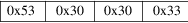
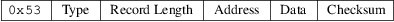
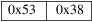

srec_stewie - Stewie’s binary file format
If you have a URL for documentation of this format, please let me know.
Any resemblance to the Motorola S-Record is superficial, and extends only to the data records. The header records and termination records are completely different. None of the other Motorola S-Records record type are available.
The
Records
All records start with an ASCII capital S character, value
0x53, followed by a type specifier byte. All records consist
of binary bytes.
The Header
Record
Each file starts with a fixed four byte header record.

The Data Records
Each data record consists of 5 fields. These are the type
field, length field, address field, data field, and the
checksum. The lines always start with a capital S
character.

|
Type |
The type field is a one byte field that specifies whether the record has a two-byte address field (0x31), a three-byte address field (0x32) or a four-byte address field (0x33). The address is big-endian. |
Record Length
The record length field is a one byte field that specifies the number of bytes in the record following this byte.
|
Address |
This is a 2-, 3- or 4-byte address that specifies where the data in the record is to be loaded into memory. | ||
|
Data |
The data field contains the executable code, memory-loadable data or descriptive information to be transferred. |
Checksum
The checksum is a one byte field that represents the least significant byte of the one’s complement of the sum of the values represented by the bytes making up the record’s length, address, and data fields.
The
Termination Record
Each file ends with a fixed two byte termination record.

Size Multiplier
In general, binary data will expand in sized by
approximately 1.2 times when represented with this
format.
Here is an hex-dump example file. It contains the data “Hello, World[rq] to be loaded at address 0.
0000: 53 30 30 33 53 31 10 00
00 48 65 6C 6C 6F 2C 20 S003S1...Hello,
0010: 57 6F 72 6C 64 0A 9D 53 38 World..S8
srec_cat
version 1.65
Copyright (C) 1998, 1999, 2000, 2001, 2002, 2003, 2004,
2005, 2006, 2007, 2008, 2009, 2010, 2011, 2012, 2013, 2014,
2018, 2019, 2022 Peter Miller
The srec_cat program comes with ABSOLUTELY NO WARRANTY; for details use the ’srec_cat -VERSion License’ command. This is free software and you are welcome to redistribute it under certain conditions; for details use the ’srec_cat -VERSion License’ command.